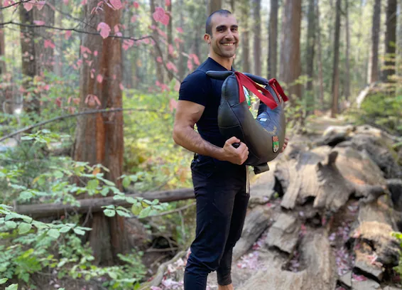

B263 · Cultivate that feel good energy!
Hi {first_name},
After having returned from a weekend in the forest, my energy is full and spirits are high!
Today, I arrived here in Austin, Texas, to celebrate the wedding of a dear friend and record some epic podcasts with people like Paul Chek, and Josh Trent of Wellness Force. Get ready for those to be released in the coming weeks/months : )
 Let's me just say that I'm PUMPED!
Tomorrow starts the 15-Minute Feel Good Challenge and I'm fully ready and vitalized to deliver something special for you. I'd LOVE for you to join in the fun we'll be having! This challenge is all about motivating and teaching you live progressive trainings that will improve how you feel immediately. You will learn new skills and have fun in the process.
The key Feel Good elements that we'll be coving over the course of 5-7 days (there is a bonus day and one-off day included in the mix over the weekend), are breath-work, self-massage techniques, mobility, play, kettlebell training and stretching -
All you need is one kettlebell to participate and a bit of space.
For our bonus day (Saturday), I'll be taking you through a fun 15 minute Bulgarian Bag and Kettlebell combination workout! If you don't have a Bulgarian Bag, don't worry, I will provide kettlebell substitution exercises that you can utilize.
Also, while all these trainings will be hosted live, you will be able to watch the recordings in a Facebook group upon signing up and following the sessions. If you don't have or use Facebook, there is an option where you can have the Zoom recording links sent to you as well (you will see this option on the site).
Click here for more info.
This challenge starts tomorrow Thursday, 10/22 at 9am PST!
For any questions, please email me and I'll get you dialed in!
Wishing you a lovely evening, Mike
P.S. If you haven't yet seen this week's newest Youtube video, I take you through a simple and quick Bulgarian Bag superset workout. You'll get to perform the same training I did on one of my days visiting Big Trees National Park. I couldn't believe how enormous the trees were there - some of them had trunks that were 15+ feet in diameter!
Click here to watch the video! |